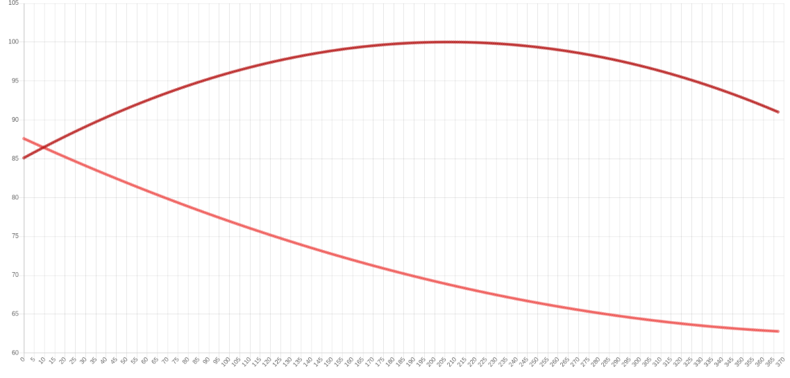

Chart.js is a popular JavaScript charting library and ng2-charts is a wrapper for Angular 2+ that makes it easy to integrate Chart.js in Angular. Let’s go over the basic usage.
Installation
- Install ng2-charts using npm:
npm install --save ng2-charts - Install Chart.js library:
npm install --save chart.js - [Options] Then, if you’re using the Angular CLI, you can simply add Chart.js to the list of scripts in your
.angular-cli.jsonfile so that it gets bundled with the app:
angular-cli.json
1 | "scripts": [ |
API
Now you’ll want to import ng2-chart’s ChartsModule into your app module or a feature module:
app.module.ts
1 | import { BrowserModule } from '@angular/platform-browser'; |
Usage
ng2-charts gives us a baseChart directive that can be applied on an HTML canvas element. Here’s an example showing-off some of the options to pass-in as inputs and the chartClick event that’s outputted by the directive:
app.component.html
1 | <div style="width: 40%;"> |
And here’s what it can look like in our component class:
app.component.ts
1 | import { Component } from '@angular/core'; |

Options
Here’s a quick breakdown of the different input options
- chartType: This sets the base type of the chart. The value can be
pie,doughnut,bar,line,polarArea,radarorhorizontalBar. - legend: A boolean for whether or not a legend should be displayed above the chart.
- datasets: This should be an array of objects that contain a data array and a label for each data set.
- data: If your chart is simple and has only one data set, you can use
datainstead ofdatasetsand pass-in an array of data points. - labels: An array of labels for the X-axis.
- options: An object that contains options for the chart. You can refer to the official
Chart.js documentationfor details on the available options.
In the above example we set the chart to be responsive and adapt depending on the viewport size.
- colors: Not shown in the above example, but you can define your own colors with the
colorsinput. Pass-in an array of object literals that contain the following value:1
2
3
4
5
6
7
8
9
10
11myColors = [
{
backgroundColor: 'rgba(103, 58, 183, .1)',
borderColor: 'rgb(103, 58, 183)',
pointBackgroundColor: 'rgb(103, 58, 183)',
pointBorderColor: '#fff',
pointHoverBackgroundColor: '#fff',
pointHoverBorderColor: 'rgba(103, 58, 183, .8)'
},
... other colors
];
Events
Two events are emitted, chartClick and chartHover, and they allow to react to the user interacting with the chart. The currently active points and labels are returned as part of the emitted event’s data.
- chartClick: fires when click on a chart has occurred, returns information regarding active points and labels
- chartHover: fires when mousemove (hover) on a chart has occurred, returns information regarding active points and labels
- Updating Datasets Dynamically: Of course, the beauty of Chart.js is that your charts can easily by dynamic and update/respond to data received from a backend or from user input.
In the bellow example we add a new data points for the month of May:
app.component.ts
1 | newDataPoint(dataArr = [100, 100, 100], label) { |
And it can be used like this:
app.component.html
1 | <button (click)="newDataPoint([900, 50, 300], 'May')"> |
Schematics
There are schematics that may be used to generate chart components using Angular CLI. The components are defined in package ng2-charts-schematics.
Installation of Schematics Packagenpm instal --save-dev ng2-charts-schematics
Example of Generating a Line Chart using Angular CLIng generate ng20chart0schematics:line my-line-chart
This calls angular’s component schematics and then modifies the result, so all the options for the component schematic are also usable here. This schematics will also add the ChartsModule as an imported module in the main app module (or another module as specified in the –module command switch).